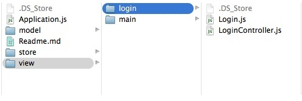

Sample Login App
Many classes have shortcut names used when creating (instantiating) a class with a
configuration object. The shortcut name is referred to as an alias (or xtype if the
class extends Ext.Component). The alias/xtype is listed next to the class name of
applicable classes for quick reference.
Framework classes or their members may be specified as private or protected. Else,
the class / member is public. Public, protected, and private are access
descriptors used to convey how and when the class or class member should be used.
Public classes and class members are available for use by any other class or application code and may be relied upon as a stable and persistent within major product versions. Public classes and members may safely be extended via a subclass.
Protected class members are stable public members intended to be used by the
owning class or its subclasses. Protected members may safely be extended via a subclass.
Private classes and class members are used internally by the framework and are not intended to be used by application developers. Private classes and members may change or be omitted from the framework at any time without notice and should not be relied upon in application logic.
static label next to the
method name. *See Static below.Below is an example class member that we can disect to show the syntax of a class member (the lookupComponent method as viewed from the Ext.button.Button class in this case).
Let's look at each part of the member row:
lookupComponent in this example)( item ) in this example)Ext.Component in this case). This may be omitted for methods that do not
return anything other than undefined or may display as multiple possible values
separated by a forward slash / signifying that what is returned may depend on the
results of the method call (i.e. a method may return a Component if a get method calls is
successful or false if unsuccessful which would be displayed as
Ext.Component/Boolean).PROTECTED in
this example - see the Flags section below)Ext.container.Container in this example). The source
class will be displayed as a blue link if the member originates from the current class
and gray if it is inherited from an ancestor or mixed-in class.view source in the example)item : Object in the example).undefined a "Returns" section
will note the type of class or object returned and a description (Ext.Component in the
example)Available since 3.4.0 - not pictured in
the example) just after the member descriptionDefaults to: false)The API documentation uses a number of flags to further commnicate the class member's function and intent. The label may be represented by a text label, an abbreviation, or an icon.
classInstance.method1().method2().etc();false is returned from
an event handler- Indicates a framework class
- A singleton framework class. *See the singleton flag for more information
- A component-type framework class (any class within the Ext JS framework that extends Ext.Component)
- Indicates that the class, member, or guide is new in the currently viewed version
- Indicates a class member of type config
- Indicates a class member of type property
- Indicates a class member of type
method
- Indicates a class member of type event
- Indicates a class member of type
theme variable
- Indicates a class member of type
theme mixin
- Indicates that the class, member, or guide is new in the currently viewed version
Just below the class name on an API doc page is a row of buttons corresponding to the types of members owned by the current class. Each button shows a count of members by type (this count is updated as filters are applied). Clicking the button will navigate you to that member section. Hovering over the member-type button will reveal a popup menu of all members of that type for quick navigation.
Getting and setter methods that correlate to a class config option will show up in the methods section as well as in the configs section of both the API doc and the member-type menus just beneath the config they work with. The getter and setter method documentation will be found in the config row for easy reference.
Your page history is kept in localstorage and displayed (using the available real estate) just below the top title bar. By default, the only search results shown are the pages matching the product / version you're currently viewing. You can expand what is displayed by clicking on the button on the right-hand side of the history bar and choosing the "All" radio option. This will show all recent pages in the history bar for all products / versions.
Within the history config menu you will also see a listing of your recent page visits. The results are filtered by the "Current Product / Version" and "All" radio options. Clicking on the button will clear the history bar as well as the history kept in local storage.
If "All" is selected in the history config menu the checkbox option for "Show product details in the history bar" will be enabled. When checked, the product/version for each historic page will show alongside the page name in the history bar. Hovering the cursor over the page names in the history bar will also show the product/version as a tooltip.
Both API docs and guides can be searched for using the search field at the top of the page.
On API doc pages there is also a filter input field that filters the member rows using the filter string. In addition to filtering by string you can filter the class members by access level, inheritance, and read only. This is done using the checkboxes at the top of the page.
The checkbox at the bottom of the API class navigation tree filters the class list to include or exclude private classes.
Clicking on an empty search field will show your last 10 searches for quick navigation.
Each API doc page (with the exception of Javascript primitives pages) has a menu view of metadata relating to that class. This metadata view will have one or more of the following:
Ext.button.Button class has an alternate class name of Ext.Button). Alternate class
names are commonly maintained for backward compatibility.Runnable examples (Fiddles) are expanded on a page by default. You can collapse and expand example code blocks individually using the arrow on the top-left of the code block. You can also toggle the collapse state of all examples using the toggle button on the top-right of the page. The toggle-all state will be remembered between page loads.
Class members are collapsed on a page by default. You can expand and collapse members using the arrow icon on the left of the member row or globally using the expand / collapse all toggle button top-right.
Viewing the docs on narrower screens or browsers will result in a view optimized for a smaller form factor. The primary differences between the desktop and "mobile" view are:
The class source can be viewed by clicking on the class name at the top of an API doc page. The source for class members can be viewed by clicking on the "view source" link on the right-hand side of the member row.
One of the most frequently requested tutorials is how to make a login system. We're going to start off this ongoing tutorial by building just that. Please note that this is only one way of creating a login system. There are many other viable options. This is simply meant to show you an approach to creating an application with login/logout functionality. For this guide we'll be building the sample login app with the classic toolkit in Ext JS 6.
Note: Ext JS 6 gives you the option to create applications using the classic toolkit,
the modern toolkit, or both (within a "universal application). This guide focuses
specifically on the classic toolkit. That said, the application structure will be the
same for an application using the modern toolkit, so you shouldn't have any trouble
following along if you translate the view components appropriately. Universal
applications house their views within classic and modern directories in the app root
folder. If you're following this guide and have created a universal app, your views will
be located in the {appRoot}/classic/view/ instead of {appRoot}/app/view/.
Disclaimer: This tutorial is meant to show users one way in which they can design an application to contain a "logged in" and "logged out" view. This tutorial does not attempt to achieve secure data connections, session management, true authentication, etc. It is for educational purposes only.
The first thing we want to do is generate an application using Sencha Cmd. You can do so by issuing the following command from your command line interface, or CLI:
sencha -sdk /path/to/ExtSDK generate app -classic TutorialApp ./TutorialApp
Note: For completeness, the following statement would generate a modern app:
sencha -sdk /path/to/ExtSDK generate app -modern TutorialApp ./TutorialApp
and the following would generate a universal app:
sencha -sdk /path/to/ExtSDK generate app TutorialApp ./TutorialApp
Note: If you do not have Sencha Cmd, or are unfamiliar with using it, please read the Cmd Introduction guide before proceeding.
The resulting TutorialApp is a fully functional Cmd generated application that we will use as a foundation for our login/logout application. You can view this application by navigating to the application's location on your webserver. For instance:
http://localhost/TutorialApp
Or by starting "sencha app watch" from within the newly generated TutorialApp folder. This will spin up a Jetty server, which removes the need for a traditional web server. If you use "sencha app watch", you can find the application here:
http://localhost:1841/
Next, we're going to navigate to our newly generated TutorialApp. Drill down into your generated application's "app/view/" folder. You should see the default generated "main" folder. This folder contains the Main.js, MainController.js, and MainModel.js files.
Let's go ahead and prepare our project for the login functionality by creating a new app/view folder called "login". After creating the "app/view/login/" folder, add the following files to said folder:
- Login.js
- LoginController.js
The resulting file structure should look like this:

The mainView config of application is a very handy way to automatically load and instantiate "TutorialApp.view.main.Main" by utilizing the Viewport Plugin. However, we have some evaluations to perform in Ext.application's launch method prior to picking our initial view. For instance, we do not want to create the Main view if the user is not yet logged in.
For the purposes of this exercise, let's remove the mainView config from the
application config in "{appRoot}/app.js".
Note: Since we have removed mainView, refreshing your application will result in a
blank page as no classes are being instantiated.
Next, let's create a login view. To do this, we'll open our blank "{appRoot}/app/view/login/Login.js" file and begin defining the Login Window.
First, let's define our Class and extend the base Window class. That looks like so:
Ext.define('TutorialApp.view.login.Login', {
extend: 'Ext.window.Window',
xtype: 'login'
});
Now, we've defined our Login class as an extension of Ext.window.Window, which
can be instantiated using the xtype login. Let's start giving our class some unique
properties. We'll start by adding some additional configurations to the window itself.
Ext.define('TutorialApp.view.login.Login', {
extend: 'Ext.window.Window',
xtype: 'login',
requires: [
'TutorialApp.view.login.LoginController',
'Ext.form.Panel'
],
controller: 'login',
bodyPadding: 10,
title: 'Login Window',
closable: false,
autoShow: true
});
Let's walk through what these configurations mean.
The requires block makes sure that we're including any
classes that may be relied upon before instantiating our Login window. We need to
include LoginController.js because we're about to designate it as our controller on
the next line. We also need to include Ext.form.Panel since our view contains a
Form panel.
The controller config designates a
ViewController, which will then be attached to instances
of the Login window. This controller provides a place to include all logic relating to
the Login window or its child components. Here, we designate controller to be login,
which will be our controller's alias.
The bodyPadding config is purely aesthetic. This config applies "10px" of padding around the exterior of the window's body content.
The string passed to the title config results in the creation of a header and adds the string value as its title.
closable determines whether or not the window can be closed. Windows have a closable button by default. However, since this is a login window, we don't want the user closing it. If they DID close it, they would be left with a blank page.
Windows are hidden by default. Setting autoShow
to true will show the Window once it's created. The alternative would be call the
Window's show method programmatically when we want
the Window to be visible.
Now that we've discussed the Window's configuration, let's give it some child components. Since this will be a login form, we'll create a Form panel as a child of the Window. Then we'll add two textfields, a Display field, and a submit Button.
The final code for this file should appear as follows:
Ext.define('TutorialApp.view.login.Login', {
extend: 'Ext.window.Window',
xtype: 'login',
requires: [
'TutorialApp.view.login.LoginController',
'Ext.form.Panel'
],
controller: 'login',
bodyPadding: 10,
title: 'Login Window',
closable: false,
autoShow: true,
items: {
xtype: 'form',
reference: 'form',
items: [{
xtype: 'textfield',
name: 'username',
fieldLabel: 'Username',
allowBlank: false
}, {
xtype: 'textfield',
name: 'password',
inputType: 'password',
fieldLabel: 'Password',
allowBlank: false
}, {
xtype: 'displayfield',
hideEmptyLabel: false,
value: 'Enter any non-blank password'
}],
buttons: [{
text: 'Login',
formBind: true,
listeners: {
click: 'onLoginClick'
}
}]
}
});
Let's discuss these additions.
The first configuration we've added to the Login window is the
items config. In
containers, like the Form panel and the Login window
itself, the items config may hold a Component or a Component
configuration object. The items config may also be an array of Components or Component
config objects. These Components will be displayed in the Container's body using the
Container's layout.
Every Component class has it's own xtype. You can think
of an xtype as a shortcut to easily create an instance of a Component. In this case,
we have configured the Login window with a child item with an xtype of "form" ("form"
being the xtype of the Ext.form.Panel class). Form panels are special
types of Panels that include convenient configuration options for working with
input fields.
Next, you'll see the familiar face of another items array. Here we're nesting
additional items by using the items array a level deeper. We're placing more Components
inside of the parent component, which is the Form panel. In this case, our nested
Components are the form fields that make up the login form.
We can walk quickly through this array of components as they're pretty self explanatory.
The first item has an xtype of [[ext: Ext.form.field.Text textfield]], a
name of "username", a
fieldLabel of "username", and
allowBlank of "false". This boils down to a
textfield with a name value and a field label. The field cannot be left blank and pass
validation (see "formBind" below).
The next field is almost identical aside from the type being set to "password". This
turns your input into * for security's sake.
The last member of this items array is a displayfield.
A Display field is a text field that is not submitted with your form. It's useful for
conveying data without the user interacting with said data. In this case, we're
notifying the user that any non-blank password will allow the form to be submitted.
The last bit that we've added here is a buttons array. This is a convenience config used for adding Buttons to a footer Toolbar in your panel. This particular button will contain the text 'Login' and will be what users will click to submit the login form.
Our Button contains a config called formBind, which
is set to "true". When a Component has formBind set to "true", it will be disabled/enabled
depending on the validity state of the Form. This means that the Button will not be
clickable until the two input fields contain values.
The listeners object is configured with events
and the methods / functions that will respond to the firing of those events. In this
case, we're waiting for someone to click the Button. Upon a click, we "forward" the
event to a method called onLoginClick. The onLoginClick method will later be defined
in our Login controller.
Note: We have not yet instantiated the Login view in any way, so refreshing the application will not show any changes.
Next, let's create the Login controller, which is a class that contains any logic used
to handle user interactions with the Login view. To do this, we'll open our blank
{appRoot}/app/view/login/LoginController.js file and begin defining our Login window's
logic.
The entirety of LoginController.js is as follows:
Ext.define('TutorialApp.view.login.LoginController', {
extend: 'Ext.app.ViewController',
alias: 'controller.login',
onLoginClick: function() {
// This would be the ideal location to verify the user's credentials via
// a server-side lookup. We'll just move forward for the sake of this example.
// Set the localStorage value to true
localStorage.setItem("TutorialLoggedIn", true);
// Remove Login Window
this.getView().destroy();
// Add the main view to the viewport
Ext.create({
xtype: 'app-main'
});
}
});
The above code may be a little out of context, but it will make more sense when we
discuss the launch method in the next section. This class contains the onLoginClick
method that is called by clicking on the login button.
These bits of code have annotations to describe each statement's purpose, but let's look at them piece by piece for further explanation.
First of all, we're creating a method called onLoginClick. This is the method to
which we directed our login button's click event in the Login view.
As mentioned in the comments, this is where you'd call your server to verify that the user's credentials are valid. This would generally come in the form of an AJAX or REST request. However, for this tutorial, we will accept any non-blank input. Upon success, you'd follow through with the rest of the code. On failure, you would allow the user to re-enter their credentials. Of course, there's no failure possibility in this case, so let's move forward!
We are utilizing
localStorage in
this tutorial to maintain user login state. After a successful credentials check, we can
determine that the user has the appropriate access to the Main application view. We can
then set a key/value pair in localStorage to let the application know that the user is
valid. Next, we will check that the TutorialLoggedIn localStorage key is set to
"true" in our initial launch method (covered in more detail in the "launch" section
below).
ViewControllers introduce a very helpful method called
getView(). The getView() method returns the
current view associated with the ViewController from which it is called. In this case,
the view is the Login window. Since we're treating the login click as a successful
login, we no longer want to present the Login window. So, we are using
this.getView().destroy() to get a reference to the Login window and then
destroy it.
Now that we've destroyed the Login window, we want to change the view to display the
Main view. In this case, we use Ext.create({ xtype: 'app-main' }) to instantiate the
"{appRoot}/app/view/main/Main.js" view.
Note: 'app-main' refers to the xtype that is defined on our Sencha Cmd generated
"TutorialApp.view.main.Main" class located in "{appRoot}/app/view/main.Main.js".
Next, let's discuss "{appRoot}/app/Application.js" and the launch function.
"Application.js" is the heart of your application. You can find "Application.js" at the
same level as your "view", "store", and "model" folders. It provides a handy method
called launch, which fires when your application has loaded all of its required
classes. Here is the full code for this tutorial's "Application.js" file.
Ext.define('TutorialApp.Application', {
extend: 'Ext.app.Application',
name: 'TutorialApp',
stores: [
// TODO: add global / shared stores here
],
launch: function () {
// It's important to note that this type of application could use
// any type of storage, i.e., Cookies, LocalStorage, etc.
var loggedIn;
// Check to see the current value of the localStorage key
loggedIn = localStorage.getItem("TutorialLoggedIn");
// This ternary operator determines the value of the TutorialLoggedIn key.
// If TutorialLoggedIn isn't true, we display the login window,
// otherwise, we display the main view
Ext.create({
xtype: loggedIn ? 'app-main' : 'login'
});
},
onAppUpdate: function () {
Ext.Msg.confirm('Application Update', 'This application has an update, reload?',
function (choice) {
if (choice === 'yes') {
window.location.reload();
}
}
);
}
});
Let's examine what these pieces are doing.
We've already described what requires does, but let's touch on this particular array. For the purposes of "Application.js", we need to prepare the application to load either the Login or Main view, depending on the results of the logged in evaluation to come. To that end, we must require both "TutorialApp.view.main.Main" and "TutorialApp.view.login.Login" so that either result is available.
As previously mentioned, the launch method is a function that executes when your
application has loaded everything it needs to run. This is an ideal place to perform
logic regarding user state for a login/logout application.
Tthe next step is to check for a previously set localStorage key called
TutorialLoggedIn. We are simply setting the loggedIn variable to the result of
that key's value. If it doesn't exist, loggedIn will be null. If it does exist,
we've previously set TutorialLoggedIn to be true in our LoginController's logic.
Most programming languages contain a form of conditional shorthand called ternary
operators. Ternary operators allow you to minimize the amount of code required for a
traditional if/else statement. In this case, we're using a ternary to say, "if
loggedIn exists (isn't null), let's load the Main view, otherwise, load the Login
view". We are then using the Ext.create method to instantiate the result of the
ternary operator.
As you may remember, we removed the mainView config from "{appRoot}/app.js" early on
in this tutorial. Since we don't have a Viewport defined,
your Main view will not know where to render. We are going to change that by mixing in
the viewport plugin so that
"{appRoot}/app/view/main/Main.js" will operate as our application's viewport. This way,
the Main view takes up all available width and height within the browser. It's as simple
as adding the following line to "{appRoot}/app/view/main/Main.js":
plugins: 'viewport',
We should also add a Logout button to the application's main navigation view. We'll add
it to the Main Tab panel's header so that it's accessible from any tab in the
application. Our logout button will handle click events using the onClickButton
method we'll configure in the next section.
Our resulting {appRoot}/app/view/main/Main.js file will look like this:
Ext.define('TutorialApp.view.main.Main', {
extend: 'Ext.tab.Panel',
xtype: 'app-main',
requires: [
'Ext.plugin.Viewport',
'Ext.window.MessageBox',
'TutorialApp.view.main.MainController',
'TutorialApp.view.main.MainModel',
'TutorialApp.view.main.List'
],
controller: 'main',
viewModel: 'main',
plugins: 'viewport',
ui: 'navigation',
tabBarHeaderPosition: 1,
titleRotation: 0,
tabRotation: 0,
header: {
layout: {
align: 'stretchmax'
},
title: {
bind: {
text: '{name}'
},
flex: 0
},
iconCls: 'fa-th-list',
items: [{
xtype: 'button',
text: 'Logout',
margin: '10 0',
handler: 'onClickButton'
}]
},
tabBar: {
flex: 1,
layout: {
align: 'stretch',
overflowHandler: 'none'
}
},
responsiveConfig: {
tall: {
headerPosition: 'top'
},
wide: {
headerPosition: 'left'
}
},
defaults: {
bodyPadding: 20,
tabConfig: {
plugins: 'responsive',
responsiveConfig: {
wide: {
iconAlign: 'left',
textAlign: 'left'
},
tall: {
iconAlign: 'top',
textAlign: 'center',
width: 120
}
}
}
},
items: [{
title: 'Home',
iconCls: 'fa-home',
// The following grid shares a store with the classic version's grid as well!
items: [{
xtype: 'mainlist'
}]
}, {
title: 'Users',
iconCls: 'fa-user',
bind: {
html: '{loremIpsum}'
}
}, {
title: 'Groups',
iconCls: 'fa-users',
bind: {
html: '{loremIpsum}'
}
}, {
title: 'Settings',
iconCls: 'fa-cog',
bind: {
html: '{loremIpsum}'
}
}]
});
We're almost finished! All that's left now is to give the user some way to logout of
the application, which will destroy the TutorialLoggedIn key from localStorage. This
logic should take place in the "{appRoot}/app/view/main/MainController.js" file. We will
add the onClickButton method to the ViewController to handle the logout operation.
This is the final definition of "MainController.js" for this tutorial:
Ext.define('TutorialApp.view.main.MainController', {
extend: 'Ext.app.ViewController',
alias: 'controller.main',
onItemSelected: function (sender, record) {
Ext.Msg.confirm('Confirm', 'Are you sure?', 'onConfirm', this);
},
onConfirm: function (choice) {
if (choice === 'yes') {
//
}
},
onClickButton: function () {
// Remove the localStorage key/value
localStorage.removeItem('TutorialLoggedIn');
// Remove Main View
this.getView().destroy();
// Add the Login Window
Ext.create({
xtype: 'login'
});
}
});
We shouldn't need to go into much depth here since it is basically the inverse of our
{appRoot}/app/view/login/LoginController.js code.
To summarize this functionality, onClickButton is the function that is called by the
button handler in our generated "{appMain}/app/view/main/Main.js" view. Once the click
event is detected, the following steps are taken:
Remove the localStorage key that maintains the user's logged in state.
Destroy the current view, which is TutorialApp.view.main.Main.
Recreate the login view.
You should now be able to load your application in your browser and see a fully functioning login/logout application.
We hope that you have enjoyed this tutorial. This is simply the foundation for an application, but hopefully we have introduced a few concepts that make your future projects simpler. Please feel free to suggest ideas for future tutorials via our forums. Also, feel free to follow up with questions via the support portal or forums.


 Ext JS | Terms of Use
Ext JS | Terms of Use